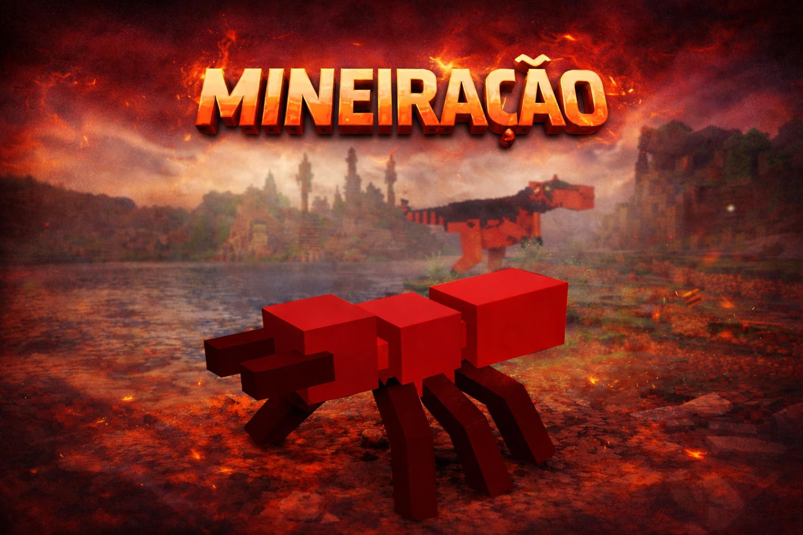
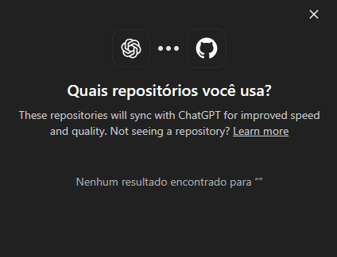
Portal: Formiga vermelhaDimensão da Mineração
Uma inundação de minérios, dezenas de masmorras e chefes escondidos por todos os lados.
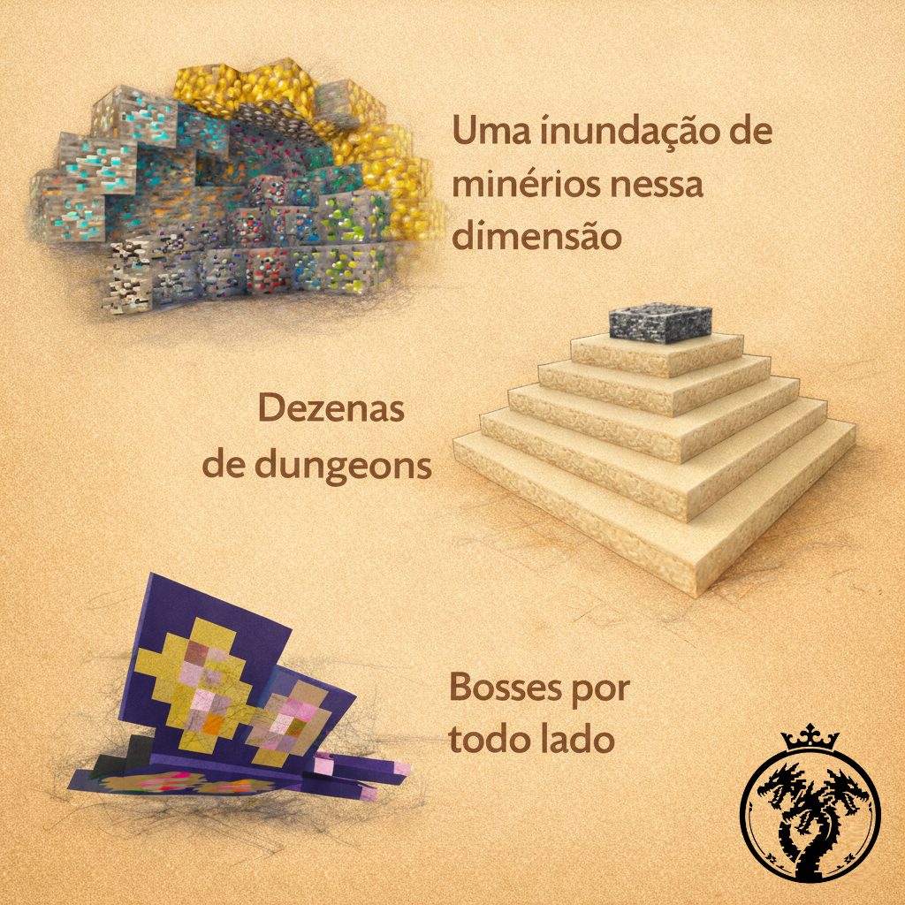
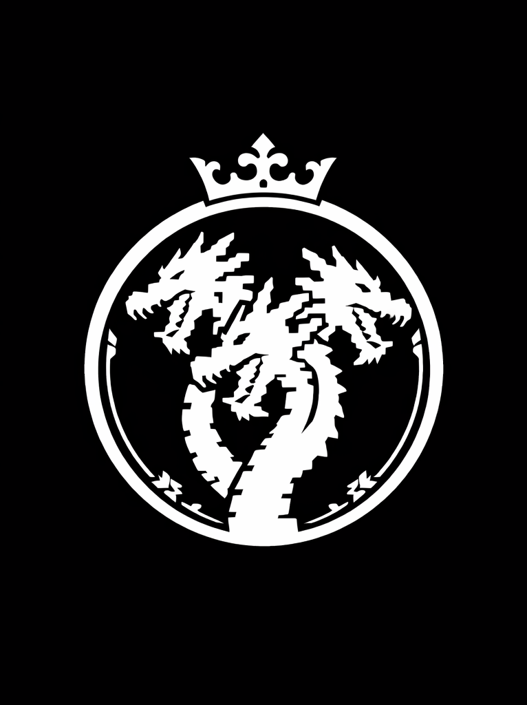
WARSPAWNWarSpawn recria a aventura caótica de OreSpawn para o Minecraft moderno, preservando a nostalgia e reconstruindo o mundo com mais conteúdo, estabilidade e identidade.
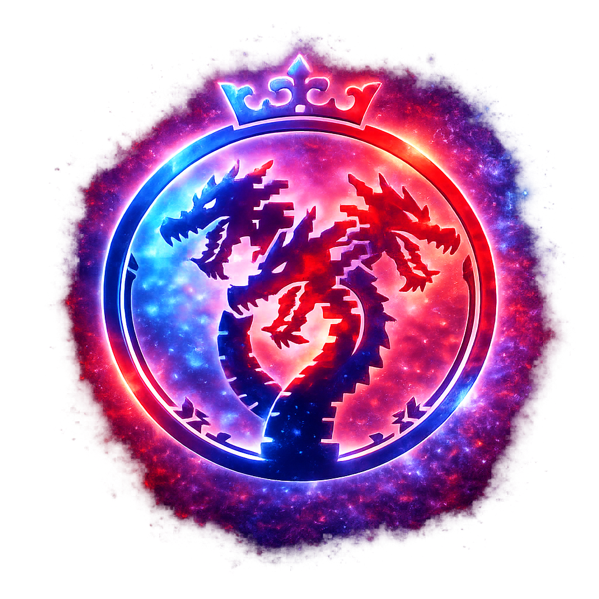
Nenhuma criatura encontrada.
Encontre o formigueiro certo, interaja com a formiga e atravesse para ecossistemas inteiros.


Portal: Formiga vermelhaUma inundação de minérios, dezenas de masmorras e chefes escondidos por todos os lados.

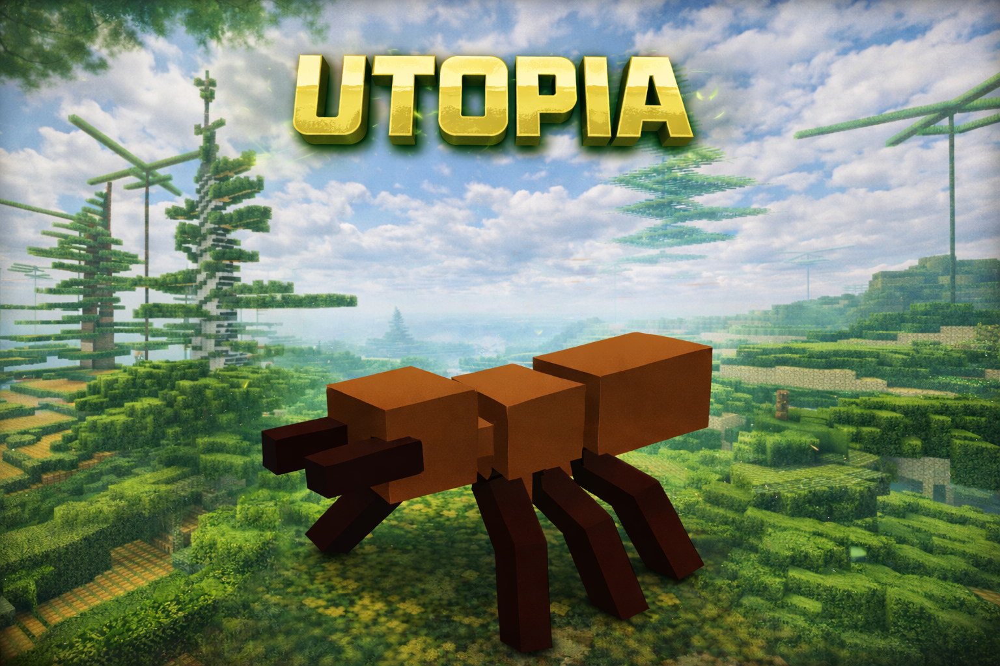
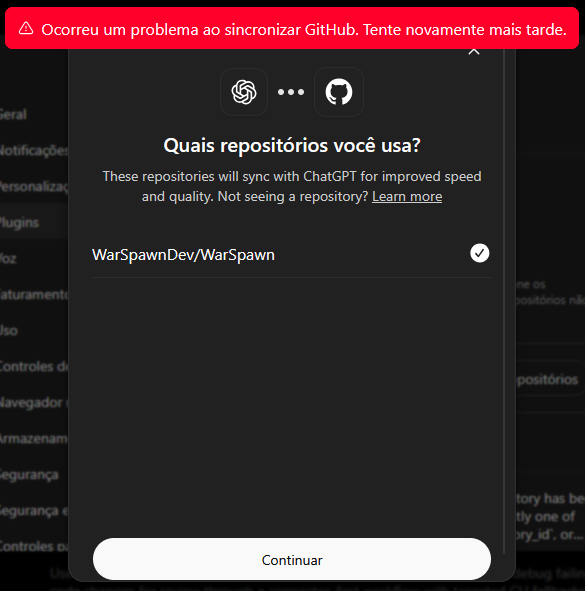
Portal: Formiga marromFlorestas exuberantes, árvores gigantes e criaturas fantásticas em um mundo de escala colossal.
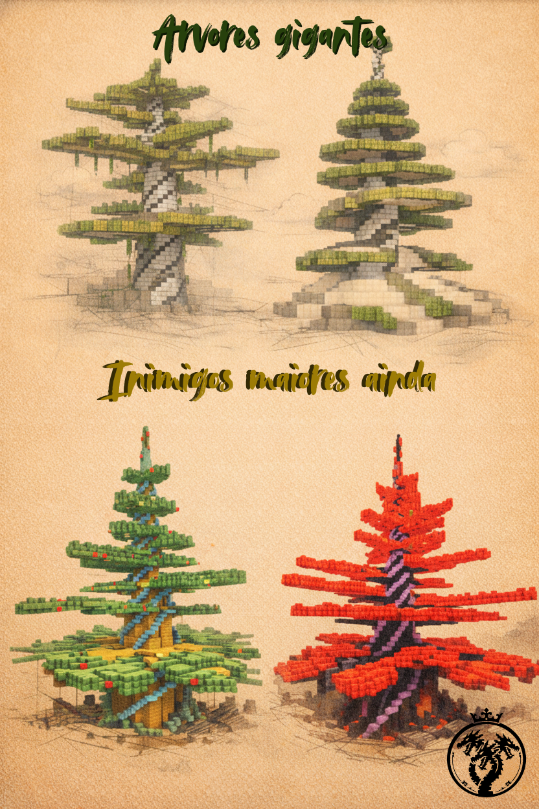
Espadas lendárias, cajados, projéteis em 3D e armaduras reconstruídas para o combate moderno.
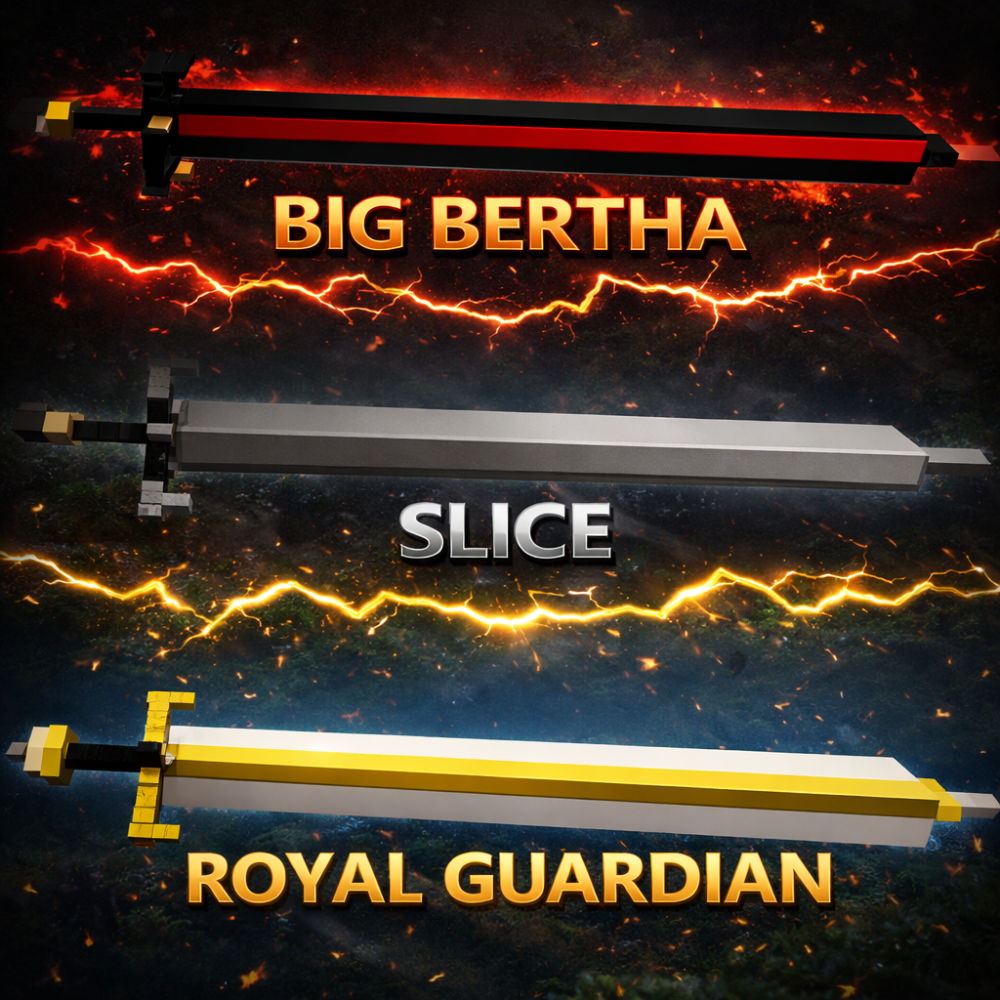
A nova área de comidas do WarSpawn reunirá ingredientes, receitas, restauração de fome e efeitos especiais em fichas fáceis de consultar.
Descubra onde encontrar cada ingrediente e quais criaturas ou dimensões fazem parte da receita.
Consulte combinações, estações de criação e o caminho completo até cada prato.
Compare fome, saturação e bônus temporários antes de partir para a próxima batalha.
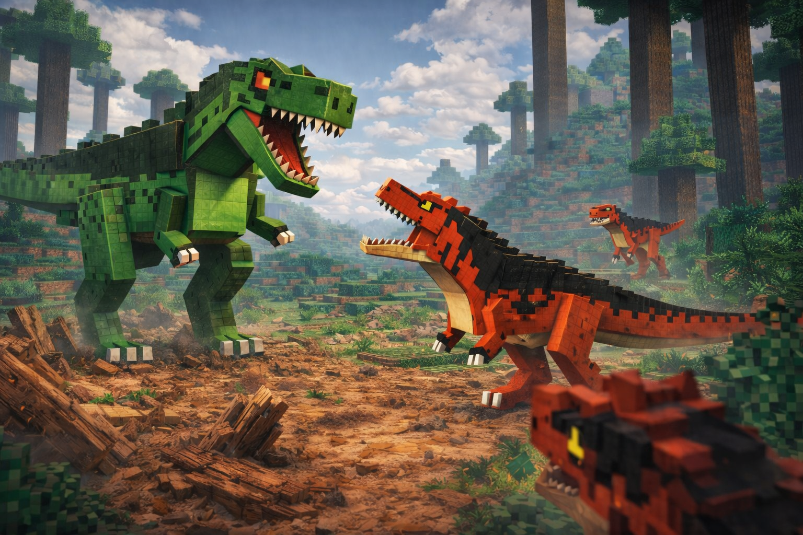


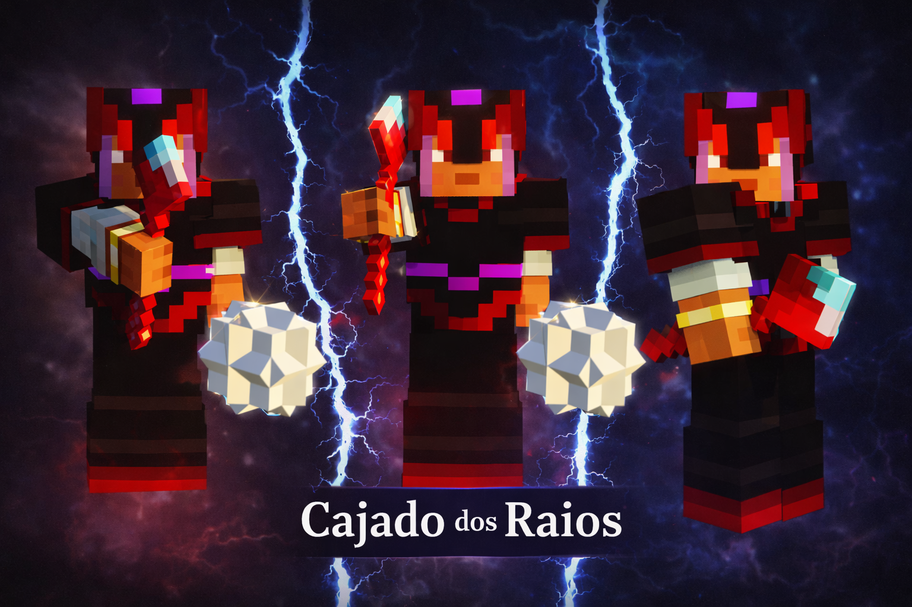
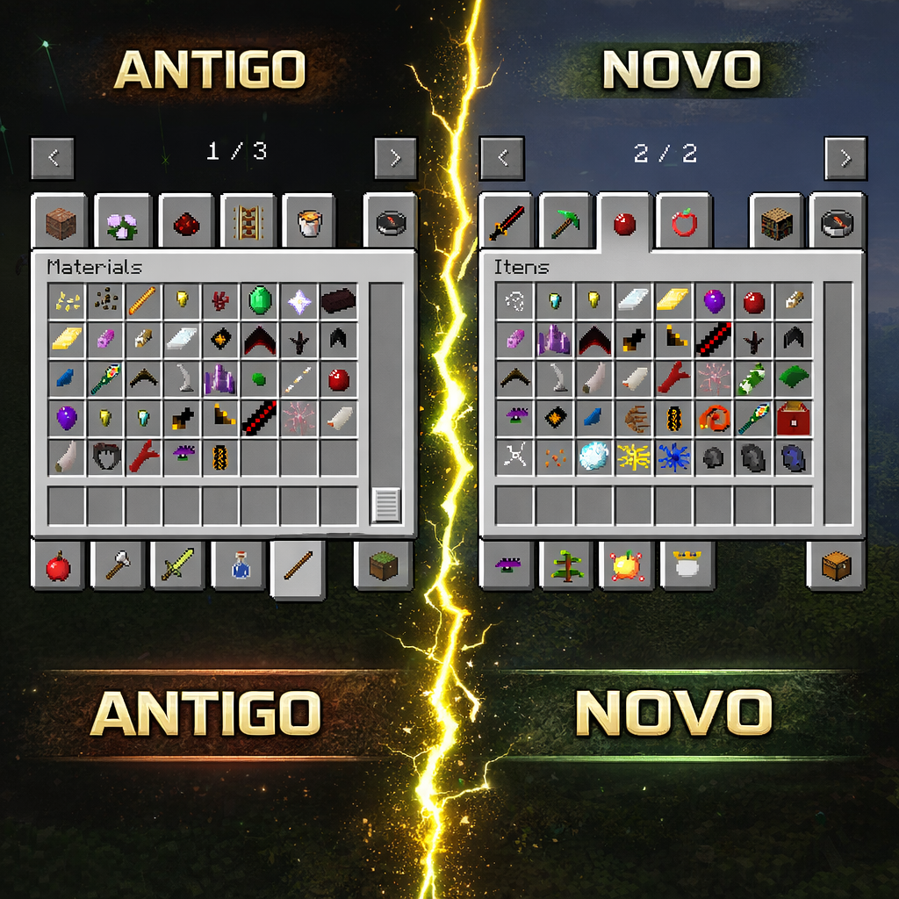